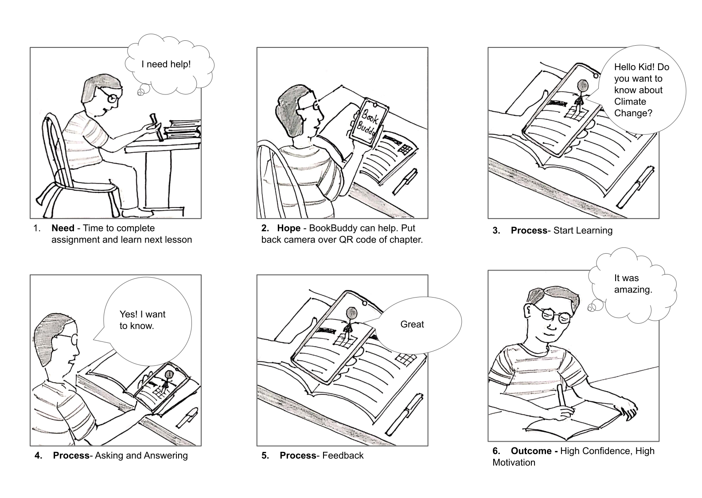
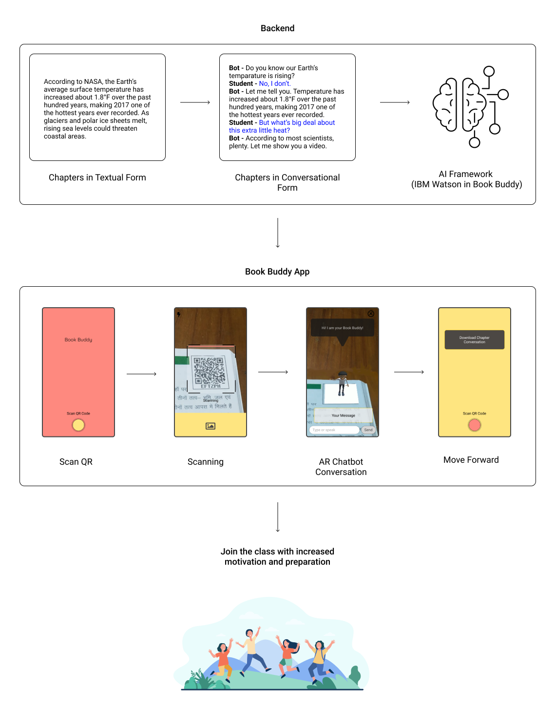

Design Process


Theme: Exploring the possibilities of Immersive Technology in Education.
Team:
Arnav (Myself) - User Research, Design and Development
Prashant - 3D Modelling and Development
Problem Statement:
How might we can meet challenges of remote learning and enhance learning experiences?
There are three main stakeholders who are directly connected to any learning system - students, teachers and parents. We went through many articles, blogs and post on internet to understand concerns with each stakeholder and attended a webinar by 'OpenIDEO' on Remote Learning where Parents, Teachers and Researchers were sharing their thoughts. We found that distance learning problems with parents were directly dependent on students' problems.


We attended some online classes to closely observe children's activities and potential problem areas.
The screenshots taken during these classes show how some children were focused, some were distracted and some were using the camera as a mirror.
After talking to their teachers, we realized lack of pedagogical training for online-teaching and digital literacy were major issues among teachers. In first view, it was something that can not be solved by simply providing a digital solution. Therefore we decided to move forward with inclination towards students' problems.

Most of the time students and teachers were rushing to complete the syllabus and class-activities were limited to answering chapter-questions and completing the assignments. This was extremely disinteresting for subjects like Social Studies, Environmental Science, Ethics etc.
There were many resources available from where students were taking help. We made a list of Learning Resources according to their teaching-method. YouTube was one of the major contributor in remote rearning but it could be considered as video-based learning.

Researching on Learning Resources, we found that some textbooks were providing QR codes to help students. This was a beautiful way to introduce marker-based AR.
Applause:
Two months later, Ranjit Disale, the man who brought the idea of QR codes in textbooks, received the Global Teachers Award 2020.
Storyboarding
Working Flow of Book-Buddy
Value Proposition Canvas can help to understand how Book-Buddy offers an easy way to fulfill gaps of remote learning.
Value Proposition Canvas

With a button to scan the QR code.
Go for AR conversation or Download the Chapter conversation.

Voice and Text enabled conversation with Book-Buddy.
Hurrah! We also developed MVP of Book-Buddy. See the Video -